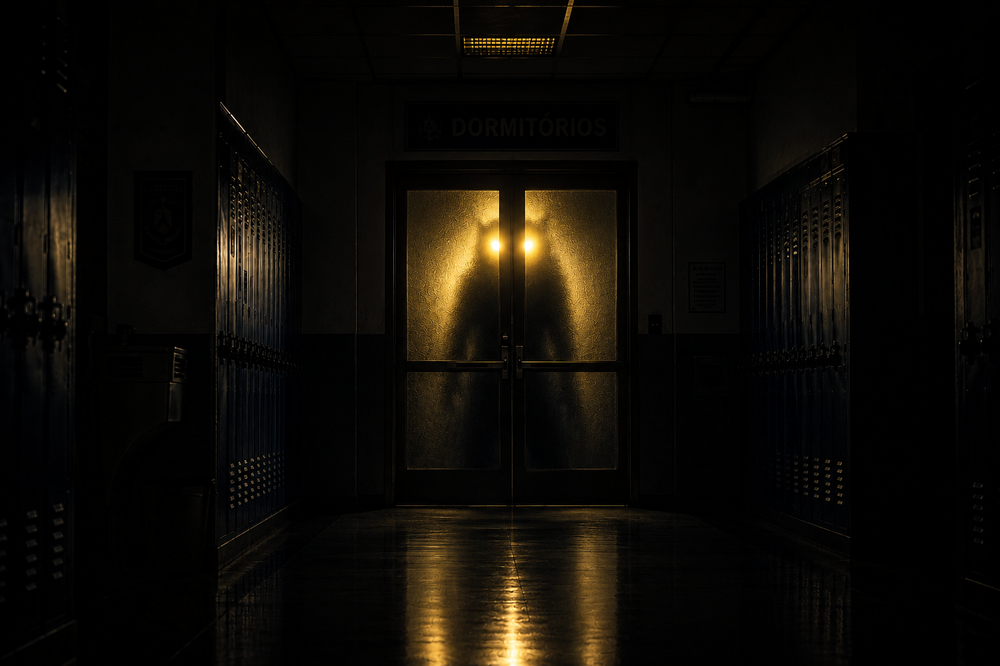
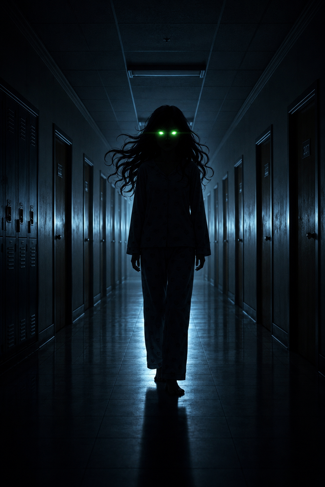
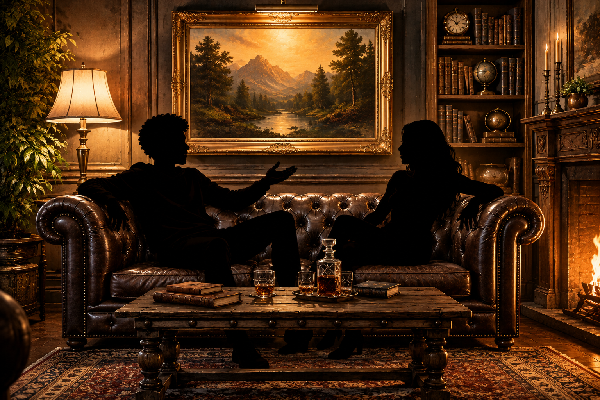

| Prólogo | Cap1 | Cap2 | Cap3 |
|---|---|---|---|
| ... | Um cão de dois metros invade meu colégio |
A crush do meu melhor amigo é uma bruxa? |
Em um piscar de olhos, meu mundo vira de ponta cabeça |
 |
 |
 |
|
| ... | Ezequiel Oliveira, um adolescente de 15 anos que tenta levar uma vida comum em um colégio integral no interior do Rio Grande do Sul. Entre amizades, trabalhos escolares e a rotina nos dormitórios da escola, a tranquilidade começa a desaparecer quando figuras misteriosas surgem pelos corredores do instituto. Após encontros estranhos envolvendo alunos secretos, olhos brilhando em cores incomuns e símbolos misteriosos, Ezequiel acaba sendo arrastado para uma realidade assustadora que parecia existir apenas em lendas e histórias folclóricas. Quando uma criatura monstruosa invade a escola durante a noite, ele percebe que o mundo sobrenatural é muito mais real — e perigoso — do que imaginava. | Bianca tenta levar uma rotina normal no instituto enquanto lida com o comportamento cada vez mais estranho de seu melhor amigo, Ezequiel. Entre conversas descontraídas com Lucas e a chegada do misterioso novato Arthur, acontecimentos inexplicáveis começam a cercar a escola. Um estranho confronto, fenômenos sobrenaturais e segredos ocultos transformam a noite no dormitório em um verdadeiro pesadelo. Quando criaturas monstruosas, figuras sombrias e poderes assustadores entram em cena, Bianca descobre que seus amigos escondem muito mais do que imaginava — e que talvez o mundo sobrenatural esteja mais próximo do que ela jamais poderia acreditar. | Após despertar, será preciso um longo dia de explições para alinharn as ocasiões inesperadas que ocorreram no ataque ao I.E.S.I |